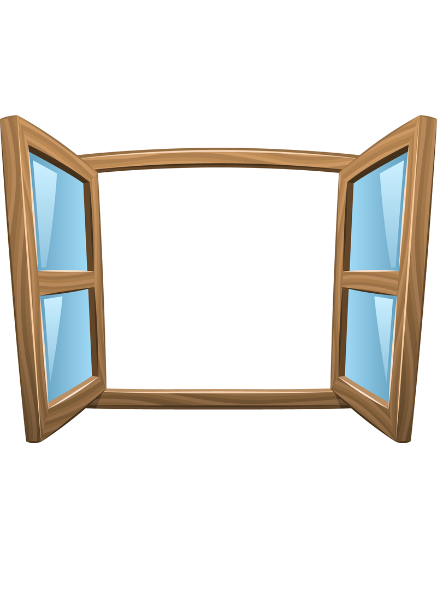

<!DOCTYPE html>
<html lang="pt-BR">
<head>
    <meta charset="UTF-8">
    <meta http-equiv="X-UA-Compatible" content="IE=edge">
    <meta name="viewport" content="width=device-width, initial-scale=1.0">
    <meta name="author" content="Aline Herculano">
    <meta name="description" content="Atividade 12 - PWEB">
    <link rel="stylesheet" href="estilos.css">
    <title>Atividade 12 | Janela Aberta/Fechada/Quebrada</title>
    <section>
    <h2>Passe o mouse para abrir a janela!</h2>
    <h2>Clique para quebrar a janela!</h2>
    <figure id="janela">
      
    </figure>
  </section>
</head>
<body>
    
   <footer class="footer-bottom">
        <p>
            <span> &copy; Designed by Aline Herculano | PWeb </span>
            <a href="https://github.com/AlineKaren/PWeb"></a>
        </p>
      </footer>
    
</body>
</html>
